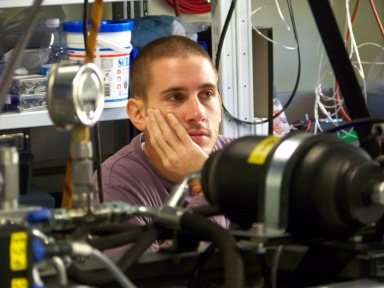

RobCoGen was designed and implemented entirely by me — Marco Frigerio, during my PhD and post-doc at the Dynamic Legged Systems lab of the Italian Institute of Technology (iit), since 2011 (!).
After that, I continued to develop and mantain RobCoGen occasionally, in the limited spare time I had while working. In 2026 I had a chance of pushing for the first release of RobCoGen2, a reimplementation of the original software.
During 2017, Markus Stäuble, Markus Giftthaler and Michael Neunert from ETH Zurich contributed to RobCoGen, bootstrapping the support for Automatic-Differentiation of the generated C++ code.
Please see the publications page for our academic papers and citation information.